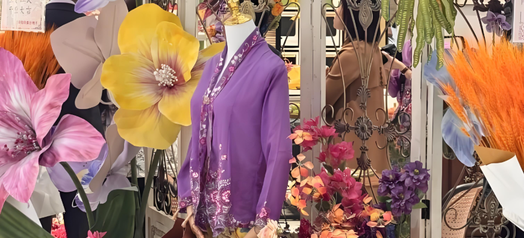
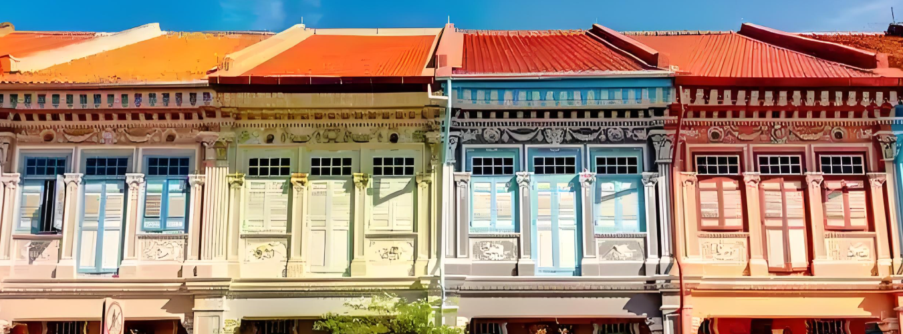

Singapore is a nation of multicultural integration, where Chinese, Malay, Indian and Western cultures coexist harmoniously, creating a unique cultural landscape. The most typical representation of this cultural fusion is Peranakan Culture, also known as Nyonya Culture.
Nyonya Culture originated in the 15th-16th centuries, formed through intermarriage between Chinese immigrants and Malay natives. In cuisine, Nyonya food combines Chinese cooking techniques with Malay spices, creating distinctive dishes like Laksa and Ayam Buah Keluak. Traditional Nyonya families still maintain the practice of manually grinding spices with stone mortars.
In clothing culture, the Kebaya worn by Nyonya women perfectly combines Malay traditional dress with Chinese embroidery. These hand-sewn garments often take months to complete, while beaded shoes (Kasut Manek) require tens of thousands of tiny beads to be sewn by hand.
In architecture, Singapore preserves many Nyonya-style shophouses that blend European neoclassicism with traditional Chinese decorative elements. Colorful tiles, intricate wooden screens and wrought iron railings are their typical features.

Beyond Nyonya culture, Singapore also preserves rich Malay traditions. Kampong Gelam is the Malay cultural district, where the Sultan Mosque built in 1824 stands as Singapore's most important Islamic architecture. During Ramadan, the night market here is exceptionally lively.
Indian Cultural Experience
Little India is the perfect place to experience Indian culture. The Sri Veeramakaliamman Temple here is adorned with colorful Hindu deities. During Deepavali, the entire neighborhood is decorated with lights, filled with festive atmosphere.

Chinese Traditional Culture
Chinatown preserves strong Chinese traditions. The Buddha Tooth Relic Temple here has magnificent architecture, and during Lunar New Year, the entire neighborhood is decorated with red lanterns. During the Hungry Ghost Festival, street offerings can be seen everywhere, showcasing Chinese traditions of honoring ancestors.
Modern Cultural Fusion
Singapore's cultural vitality is also reflected in contemporary art. The National Gallery houses extensive Southeast Asian art collections, while Esplanade regularly hosts international performances. The annual Singapore Arts Festival brings together artists from around the world.
Linguistic Characteristics
Singapore's unique "Singlish" is a linguistic product of multicultural integration, blending English, Chinese, Malay and dialect vocabulary to form distinctive expressions that have become an important marker of Singaporean cultural identity.